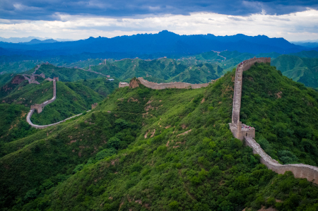
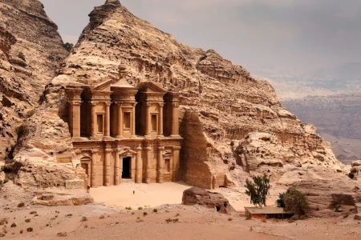
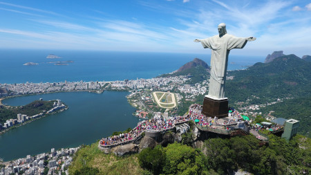
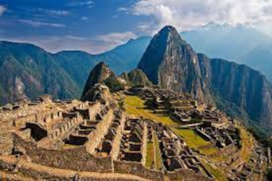
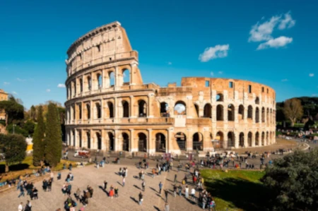
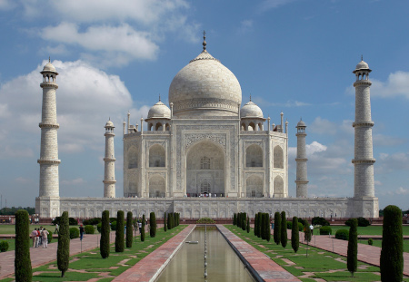

Pontos Turísticos
Bem-vindo ao fascinante universo das Sete Maravilhas do Mundo! Este blog é uma jornada emocionante que mergulha nas narrativas ricas e cativantes por trás de algumas das construções mais extraordinárias já erguidas pela habilidade humana.
Ao longo das páginas deste espaço virtual, você explorará as histórias intrigantes, os feitos arquitetônicos e as lendas que envolvem cada uma dessas sete maravilhas. Deixe-se envolver pela magia do passado enquanto viajamos por diferentes civilizações e épocas, desvendando os segredos por trás dessas obras-primas que continuam a inspirar admiração até os dias de hoje.
1. Grande Muralha da China (China):
Construída ao longo de séculos para proteger contra invasões, a Grande Muralha da China é uma obra monumental que se estende por paisagens montanhosas e planícies. Erguida com uma variedade de materiais, desde pedras até tijolos e terra, a muralha reflete a rica história militar da China e a habilidade técnica dos engenheiros e trabalhadores envolvidos em sua construção.
2. Petra (Jordânia):
Petra, a "Cidade Rosa", é um espetáculo arqueológico situado entre as escarpas de montanhas avermelhadas. A cidade foi esculpida diretamente nas rochas pelos Nabateus, evidenciando uma combinação única de engenharia e estética. O Tesouro, sua estrutura mais famosa, é uma fachada elaborada que esconde mistérios e histórias da antiga civilização.
3. Cristo Redentor (Brasil):
A estátua do Cristo Redentor, com seus 30 metros de altura, domina o horizonte do Rio de Janeiro. Além de seu significado religioso, a estátua oferece vistas panorâmicas deslumbrantes da cidade e da baía. Sua construção, concluída em 1931, é um exemplo de colaboração internacional, com o escultor polonês-ucraniano Paul Landowski e o engenheiro brasileiro Heitor da Silva Costa.
4. Machu Picchu (Peru):
Machu Picchu, "a cidade perdida dos Incas", é um tesouro arqueológico nas altas montanhas dos Andes. Construída no século XV, essa cidade misteriosa é composta por terraços agrícolas, templos e complexos residenciais, demonstrando a habilidade dos incas em harmonizar arquitetura com o ambiente natural.
5. Chichén Itzá (México):
Chichén Itzá, uma cidade maia na península de Yucatán, abriga a pirâmide de Kukulcán, um testemunho da precisão astronômica e matemática dos maias. A pirâmide é famosa pelas sombras que aparecem durante os equinócios, criando a ilusão de uma serpente subindo ou descendo as escadas.
6. Coliseu (Itália):
O Coliseu, um anfiteatro épico em Roma, foi palco de espetáculos sanguinários e eventos públicos. Sua arquitetura inovadora inclui arcos e colunas que demonstram o engenho dos construtores romanos. A construção do Coliseu foi iniciada sob o imperador Vespasiano no ano 72 d.C.
7. Taj Mahal (Índia):
O Taj Mahal, um mausoléu construído pelo imperador Shah Jahan em memória de sua esposa, Mumtaz Mahal, é um exemplo supremo da arquitetura mogol. O mármore branco, os intrincados detalhes esculpidos e os jardins simétricos tornam o Taj Mahal uma obra-prima romântica que continua a atrair visitantes de todo o mundo. Sua construção foi concluída em 1653.
